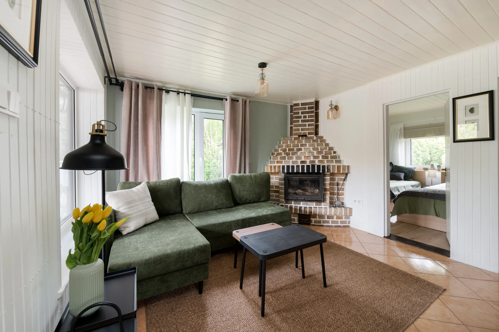
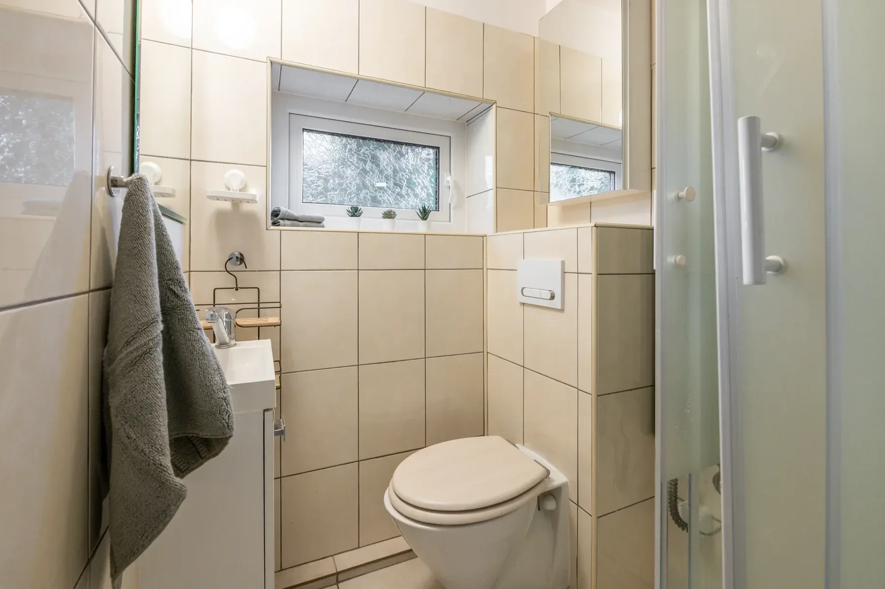
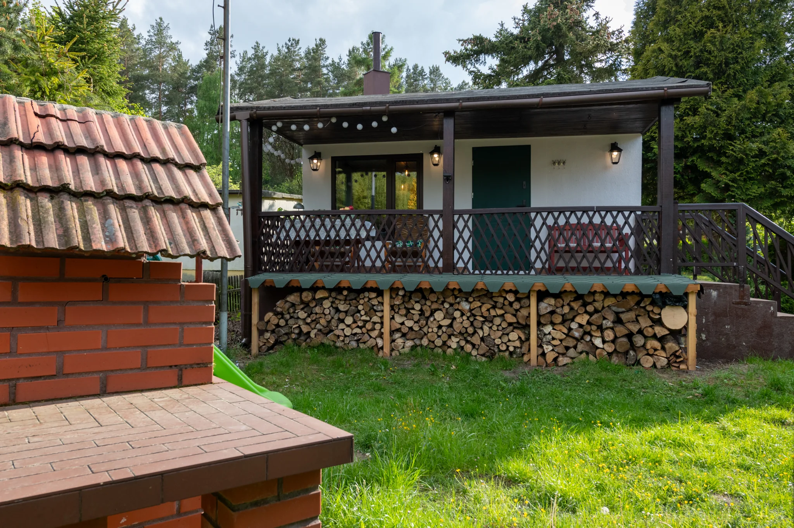

Najważniejsze
200 m od Jezioraka.
100 m od lasu.
Dwie sypialnie i salon, łóżka i pościel dla maksymalnie 6 osób, wyposażona kuchnia, kominek, Netflix, książki, 2 rowery, duży grill, zadaszony taras i parking na ogrodzonej posesji.

Dla kogo
Dla tych, którzy wolą
własny ogród od hotelowego rytmu.
Najlepiej czują się tu osoby, które przyjeżdżają po Jeziorak, las i swobodę. Masz własny taras, ogród i wszystko, czego potrzeba do wygodnego pobytu, a najważniejsze rzeczy zaczynają się kilka minut od drzwi.
Do 6 osób, ogrodzona posesja, taras, ogród i bliskość kilku plaż oraz placu zabaw za amfiteatrem.
Kominek, taras, książki i możliwość zejścia nad wodę bez planowania całego dnia.
Dwa rowery na miejscu, 100 m do lasu i trasy, które mogą zaczynać się praktycznie spod domu.
Siemiany są celem samym w sobie, ale pozwalają też wygodnie ruszać do Jerzwałdu, Iławy, Susza, Kanału Elbląskiego, Szymbarka czy Kamieńca.
Po remoncie w 2025
Wygodnie po całym dniu nad wodą i w lesie.
W 2025 r. wymieniliśmy meble, część podłóg, drzwi i okna oraz odświeżyliśmy kuchnię i łazienkę. Zależało nam nie tylko na wyglądzie, ale też na wygodzie podczas normalnego urlopu - dlatego wybraliśmy dobre materace i praktyczne wyposażenie.
Warto wiedzieć: łazienka jest niewielka, a kabina prysznicowa kompaktowa.

Galeria
W środku wygodnie.
Za drzwiami zaczynają się Jeziorak i las.
Pokazujemy domek takim, jaki jest - jasne wnętrza, kuchnię, sypialnie, salon, długi zadaszony taras i ogród.

{kind=link}
{kind=link}
{kind=link}
{kind=link}
{kind=link}
{kind=link}
Wyposażenie
Co dokładnie
jest na miejscu.
Przed rezerwacją
Najpierw klimat.
Potem konkrety.
Nie chcemy, żeby zdjęcia zastępowały informacje potrzebne do podjęcia decyzji.
FAQ
Najczęstsze pytania
przed rezerwacją.
Jak daleko jest do Jezioraka i lasu?
Około 200 m do linii brzegowej Jezioraka i około 100 m do lasu. Plaża i wieża widokowa są około 600 m od domku.
Ile osób może nocować?
Maksymalnie 6 osób. Jest sypialnia z łóżkiem podwójnym, druga sypialnia z 2 łóżkami pojedynczymi i rozkładana sofa w salonie.
Jak dojechać od strony S7?
Od strony Trójmiasta, Warszawy i Elbląga wygodnym wariantem jest zjazd z S7 w rejonie Małdyt, a następnie przejazd drogą 519 przez Zalewo i dalej przez Jerzwałd do Siemian. Po zjeździe z ekspresówki zaczyna się już spokojniejsza część drogi przez Pojezierze Iławskie.
Czy jest szybki Internet?
Tak. Korzystamy ze Starlinka - Wi-Fi osiąga około 100 Mb/s i nie ma limitu danych.
Czy można zaparkować na posesji?
Tak. Parking znajduje się na ogrodzonej posesji przy domku.
Jak wygląda łazienka?
Została odnowiona w 2025 r. Jest jasna i funkcjonalna, ale niewielka, a kabina prysznicowa jest kompaktowa. Pokazujemy ją na zdjęciach.
Gdzie sprawdzić cenę i wolny termin?
Aktualne ceny, dostępność i warunki rezerwacji publikujemy w Booking.com. Z tej strony przechodzisz bezpośrednio do naszego obiektu.
Położenie
Wychodzisz z domu
i naprawdę jesteś na miejscu.
Nie trzeba wsiadać do auta, żeby poczuć Jeziorak. Plaża i wieża są około 600 m dalej, a leśne drogi zaczynają się jeszcze bliżej.
Współrzędne: 53.7264, 19.5910
Poznaj Siemiany